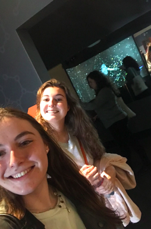
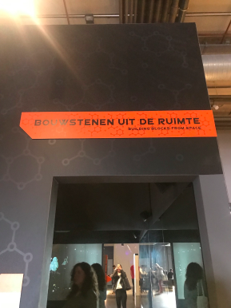
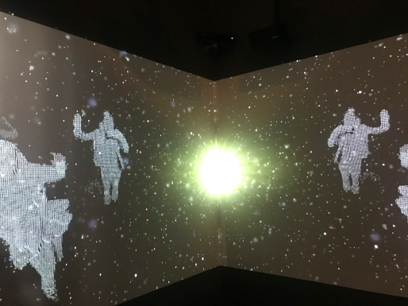

Assignment
Tijdens het bezoek aan het NEMO Museum heb ik ook een opdracht uitgevoerd. Vanuit de Haagse Hogeschool was namelijk de opdracht gegeven om een installatie in het museum uit te kiezen die je het meest interessant vond in een technisch opzicht. Hieronder zal ik toelichten welke installatie mij het meest heeft aangesproken/geïntereseerd en zal ik dit ondersteunen met afbeeldingen en een video.
De installatie die mij het meest heeft geïnteresseerd was "Bouwstenen uit de ruimte". De omschrijving luidt "Wist je dat jouw bouwstenen miljarden jaren oud zijn? Je bouwstenen zijn namelijk atomen. Alles in de wereld om je heen bestaat ook uit atomen. Deze bouwstenen ontstonden in de oerknal en zijn sindsdien steeds hergebruikt. Stap binnen en ervaar waar je van gemaakt bent.".



Het doel van de installatie is om door middel van projectie beelden informatie over bouwstenen uit de ruimte over te brengen op de doelgroep. De installatie bestaat uit een ruimte waarin op twee muren een projectie te zien is en de andere twee muren bestaan uit spiegels. Daarnaast is er een geluidsfragment wat afgespeeld wordt. Er wordt in de installatie dus informatie verteld over het onderwerp. De beelden zijn op het geluid afgestemd en andersom. Als ze het namelijk over de ruimte hebben veranderd het beeld naar een soort heelal en als ze het over de atomen zelf hebben wordt dat weer geïllustreerd met de projectie. Verder ben je zelf als je binnen de ruimte staat ook te zien op de projectie! Je wordt als een soort silhouet weergegeven die gebaseerd is op wat er afgespeeld wordt. Gaat het over de ruimte en is er een beeld van het heelal te zien, dan wordt je silhouet ingekleurd met witte puntjes. Ook wordt je silhouet onder andere weergegeven met allemaal illustraties van atomen. De projectie vangt echt op wat je doet, dus als je bijvoorbeeld zwaait dan zie je dat ook op het beeld! Er is in principe maar één gebruiker nodig voor deze installatie, maar je kan het met meerdere personen tegelijk beleven. Als technologie wordt er voornamelijk gebruik gemaakt van VR Environments met spatial augmented reality bij deze installatie. Het gebruikt sensoren die je lichaam detecteren, geluid om audio af te spelen en projectie materiaal om beeld te weergeven. Ook vind ik de installatie bij playful interaction passen, omdat er ingespeeld wordt op de emotie van de gebruiker en het een heel speels maar leerzaam concept is! Dat is ook de reden waarom ik deze installatie zo interessant vind. Toen ik binnen de ruimte stapte werd mijn aandacht al gelijk getrokken door het projectie beeld en het feit dat je zelf ook te zien was op het beeld. Je stapte als het ware echt in een andere ruimte en kon een hele nieuwe ervaring opdoen, waarbij je ook nog iets leerde. Ik was ook gelijk nieuwsgierig naar hoe ze de hele installatie hadden gemaakt en hoe het projectie beeld in elkaar zat.
Reflect
Ik vond het een hele interessante excursie. Met name omdat je nu zelf heel erg bezig bent met concepten bedenken en technologische aspecten, zoals arduino, projectie en sensoren. Dit maakt dat je toch op een andere manier dan normaal naar de installaties gaat kijken. Vooral de diversiteit aan installaties en dat alles weer een hele andere boodschap overbracht sprak mij tijdens de excursie naar NEMO aan! Ik had verschillende installaties die ik dan ook leuk vond, zoals de installatie met de warmtecamera, de installatie “bescherm de aarde” met schilden en natuurlijk de installatie die ik hierboven benoemd heb. De installaties waarbij je echt wat kon doen en beleven spraken mij wel meer aan dan de installaties die dit niet hadden en alleen wat weergaven. Al met al vond ik dit een hele leerzame excursie en heb ik nog meer zin gekregen om met de labweken aan de slag te gaan!